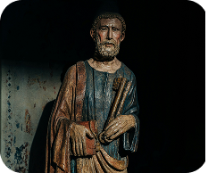
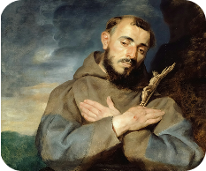
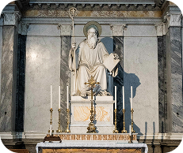

Conheça um Novo Santo!
Aqui, você escolhe o santo que deseja conhecer e encontra, em cada história, uma vida que inspira e guia. Basta decidir qual luz quer seguir.
Repositório
Nossa Senhora das Graças
Nossa Senhora de Guadalupe

São Pedro
São João Paulo II

São Francisco de Assis

São Bento